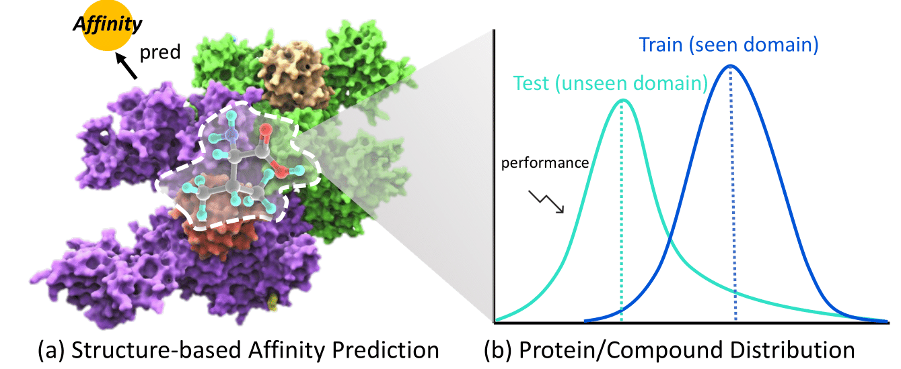
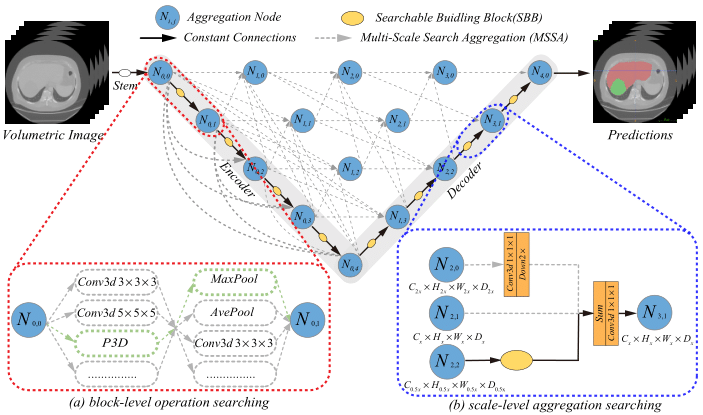
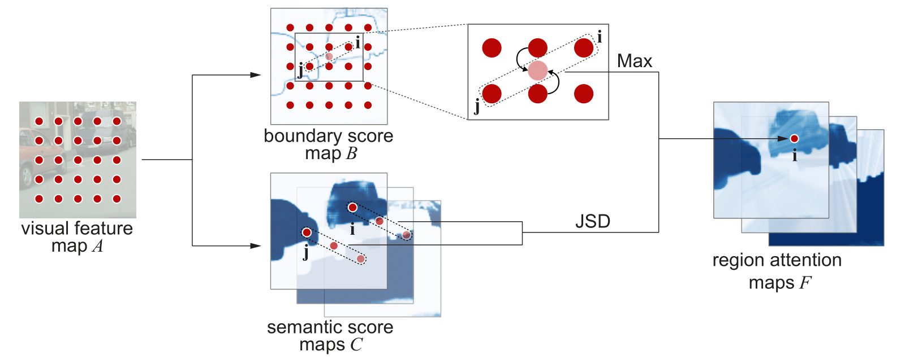

Yuanfeng Ji
|
 |
Biography
I am currently a second-year Mphil student in the Department of Computer Science, The University of Hong Kong under the supervision of Prof. Ping Luo. Before that, I got my master's degree at The City University of Hong Kong, and I attained my bachelor's degree from Shenzhen University under the supervision of Prof. Di lin. My research interests include medical image analysis and computer vision.
News
- [03/2022] Our challenge "MICCAI Abdominal Multi-Organ Segmentation Challenge 2022" has been accepted and will be held in MICCAI2022, for more information please see [link].
- [01/2022] An Out-of-Distribution (OOD) dataset and benchmark for DrugAI has been released [link].
- [07/2021] A comprehensive code base for medical image analysis has been released [link].
- [06/2021] Another paper was accepted by MICCAI2021 after rebuttal.
- [05/2021] One paper was early accepted by MICCAI2021.
Selected Publications [Google Scholar]
|  | DrugOOD: Out-of-Distribution (OOD) Dataset Curator and Benchmark for AI-aided Drug Discovery -- A Focus on Affinity Prediction Problems with Noise Annotations Yuanfeng Ji*, Lu Zhang*, Jiaxiang Wu, Bingzhe Wu, Long-Kai Huang, Tingyang Xu, Yu Rong, Lanqing Li, Jie Ren, Ding Xue, Houtim Lai, Shaoyong Xu, Jing Feng, Wei Liu, Ping Luo, Shuigeng Zhou, Junzhou Huang, Peilin Zhao, Yatao Bian |

|
Multi-Compound Transformer for Accurate Biomedical Image Segmentation Yuanfeng Ji, Ruimao Zhang, Huijie Wang, Zhen Li, Lingyun Wu, Shaoting Zhang, Ping Luo International Conference on Medical Image Computing and Computer Assisted Intervention (MICCAI 2021) |
| Multi-frame Collaboration for Effective Endoscopic Video Polyp Detection via Spatio-Temporal Feature Transformation Lingyun Wu, Zhiqiang Hu, Yuanfeng Ji, Ping Luo, Shaoting Zhang International Conference on Medical Image Computing and Computer Assisted Intervention (MICCAI 2021) |
|
|  | UXNet: Searching Multi-level Feature Aggregation for 3D Medical Image Segmentation Yuanfeng Ji, Ruimao Zhang, Zhen Li, Jiamin Ren, Shaoting Zhang, Ping Luo International Conference on Medical Image Computing and Computer Assisted Intervention (MICCAI 2020) |
|  | RANet: Region Attention Network for Semantic Segmentation Dingguo Shen*, Yuanfeng Ji*, Ping Li, Yi Wang, Di Lin Neural Information Processing Systems (NIPS 2020) |

|
PRSNet: Part Relation and Selection Network for Bone Age Assessment Yuanfeng Ji, Hao Chen, Dan Lin, XiaoHua Wu, Di Lin International Conference on Medical Image Computing and Computer Assisted Intervention (MICCAI 2019) |

|
Multi-Scale Context Interwining for Semantic Segmentation Di Lin, Yuanfeng Ji, Dani Lischinski, Daniel Cohen-Or, Hui Huang European Conference on Computer Vision (ECCV 2018) |
Honors & Awards
Gold medal of Kaggle RSNA Pneumonia Detection Challenge, 2018
Runner-up of MICCAI ISIC2018 challenge Lesion Boundary Segmentation Challenge, 2018
Top 10 team of COCO 2018 Detection Task, 2018
Top 3 team of COCO 2019 Panoptic Segmentation Task, 2019